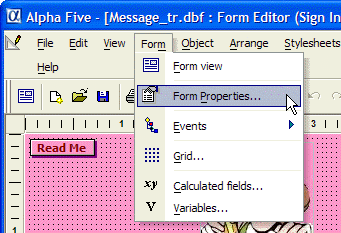
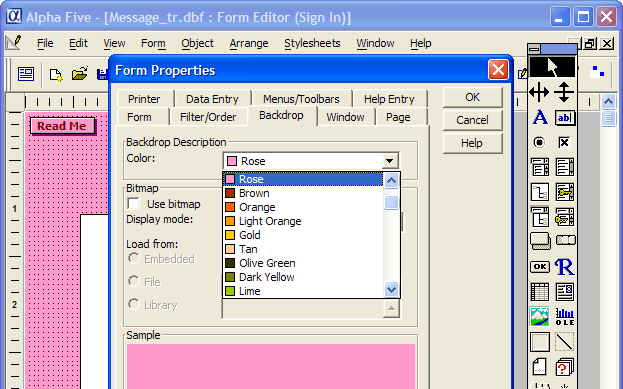
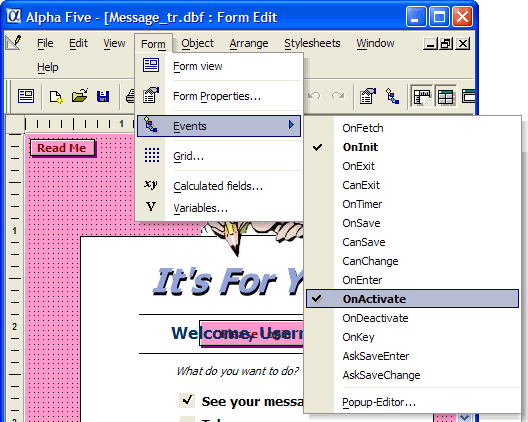
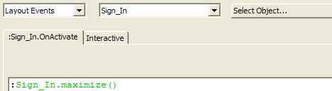
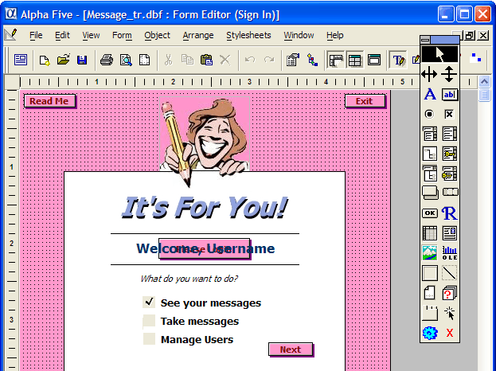

Object Events - Learning Xbasic
An event is a special type of object property that does not contain a value but actually is an Xbasic script. The Xbasic code in an event script is run when different types of events occur in the course of an object being used. Events are pre-defined for Alpha Five objects. That is, there are a fixed set of events defined for a particular object type. However, you control what happens when that event occurs through the Xbasic commands that you define in an event script.
To return to our car analogy, a car object might have the following events:
Turning On The Ignition
Turning Off the Ignition
Hitting Another Car (hope this event never happens!)
When any of these events occur, the car performs certain actions. When you Turn on the Ignition, the car might perform all of these tasks:
|
Start the engine If the engine wont start, light up a dashboard light. Check the miles driven. If the miles driven is over 100,000 then Check the service engine switch. If the service engine switch has been set (meaning the engine has been serviced) then Do nothing. else if the service engine switch has not been set then Light up a Check Engine light on the dashboard Check all the fluid levels If a fluid level is too low then light up a warning light on the dashboard |
All of these five steps are executed when the Turn on the ignition event occurs. When you buy a car, all the events that the car reacts to and what happens when each event occurs is already built-in to your car by the car company. With objects in Alpha Five, there is a big difference. Even though the events are pre-defined for a given object, you control what happens when a particular event occurs by telling Alpha Five what Xbasic commands to execute for that event.
For example, when Alpha Five displays a form object, it checks to see if any events that a form object can react to (e.g., a key press or fetching a data record) have occurred. Every object has a list of events that it can react to. But you determine what happens when that event occurs. An event is a pre-named like a form property, but what happens when that event occurs is up to you. In order for an event to cause something to happen, a script of Xbasic code must be written for that event.
For example, every form has an OnActivate event (or property ) associated with its object definition. A form is activated after it is opened when it receives focus. (Focus means that the form is currently the primary object that Alpha Five is dealing with.) So when a form has focus, keyboard input is directed to that form (or to a sub-object of that form). When a form object is activated, Alpha Five checks the OnActivate event. If Xbasic code has been written for the OnActivate event for that form, Alpha Five runs that code. If no code has been written for that particular forms OnActivate event, then Alpha Five moves on without doing anything extra even though an OnActivate event has occurred.
In the next section and exercise, you will examine the Sign In form's properties and events in more detail.
Open the Phone Messages database.
Open the Sign In form in Design mode.
From the Form menu, select Form Properties as shown in Figure 23 below.
Click the Backdrop tab and then click on the dropdown list for the Color: property.

Figure 23

Figure 24
|
Remember, there are multiple ways to navigate around Alpha Five. You can also open the Form Properties window by:
|
Change the Color property to something other than "Rose".
Click on the OK button in the Form Properties window. The background color of the form should change to the color you selected.
Reopen the Form Properties window and change the background color back to "Rose".
Click OK to close the Form Properties window.
Now select Events from the Form menu. A list of all the events for this object type (form) appears as shown in Figure 25.

Figure 25
|
Note that two of the events for this form are displayed in bold and with a checkmark next to their name. Event names are displayed like this when Xbasic code has been created for that event. The OnInit event code (which you will see later in this exercise) is executed when the form is initially loaded. The OnActivate event code is executed when the form get focus. Any other events for this form would not result in any special actions since no Xbasic code has been defined for those events. All Alpha Five form layout objects that you create have this same set of available events for you to customize actions for. |
Move your cursor onto the OnActivate event and select it (left-click the mouse). The Code Editor loads and displays the script that was defined for the OnActivate event as shown in Figure 26 below:

Figure 26
|
The Code Editor knows what kind of Xbasic script you are creating automatically, whether it is a standard script, an event script or a function. Note the toolbar for the Code Editor allows you to select the type of script, object and object events from drop-down lists, and the tab for the script in the editor displays the object event reference: :Sign_In.OnActivate You will learn more about object references (or addresses) later in this book. |
This is a very simple Xbasic script. There is only one Xbasic command:
|
:Sign_In.maximize() |
This command (you will learn more about the syntax of this command later) causes the Sign In form to be maximized in the Alpha Five window when the Sign In form is activated.
Close the Code Editor window (click the
 in the top right corner).
The Sign In form in Design mode is displayed as in
Figure 27.
in the top right corner).
The Sign In form in Design mode is displayed as in
Figure 27.
Compare Figure 27 to Figures 20 and 22. You should notice that some of the sub-objects that are clearly part of the Sign In form in Design mode (in Figure 27) are not displayed on the form in View mode in Figure 20 and others are not displayed on the form in View mode as in Figure 22.

Figure 27
In fact, one sub-object is not displayed in either Figure 20 or 22. (This sub-object is the field control that holds the variable user_id ). The display of these sub-objects is controlled by the hide property of each object. When the hide property is checked (or True) for a particular object, that object is not displayed. By changing the hide property value between checked and cleared (or True and False) using Xbasic, you can control which sub-objects are visible on a form.
|
There are two objects on the Sign In form that overlap. One object is a text control and the other is a button control. Each of these objects has a property (hide) that controls when each object is visible on the form. When the form is initially loaded (as in figure 20) the button object, Please Login, is visible and the text control. Welcome, Username, is not shown (because its hide property is set to True). After a successful logon (as shown in figure 22), the buttons hide property has been set to True and the text controls hide property has changed to False. So even though both these objects are present (i.e., they are sub-objects) on the Sign In form, whether or not they display when the form is in View mode is controlled by their object properties. |
Next
Different Types of Objects in Alpha Five